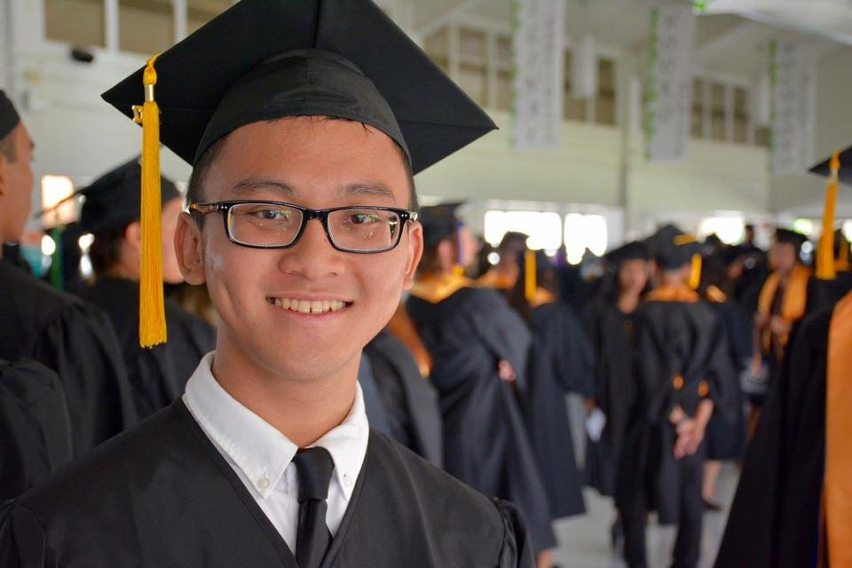

My College Experience
Hello and welcome to my blog! This blog was made as part of a project for my English273 Digital stories class at UH Manoa where I had to write 4000 words which would serve as content for anything that serves as a “digital story” which includes a youtube video, comic, video game, short film, social media campaign, etc. I chose to do a blog because I wanted to document my five years in college as a way to reflect on what I did with my time here, and to possibly gain more insight on the path that has lead me up to where I am today. I also wanted some practice creating my own website and blogging because I’ve never blogged before. What I hope for is that anyone reading my blog would be able to gain a better understanding of who I am as a person, and also possibly gain a better understanding of their own paths in life as well. Thanks for reading!
Year 1
The path of a computer science undergraduate – UH Maui College Year 1 2015-2016 I’ll be structuring this blog by school year, the end of May will count as the start/end of the school year. My first year in college, and first year out of high school was a very slow start for me. In general, I felt anxious that I wasn’t leaving home yet for college, but as the year went on I learned to just keep making progress on the things that I had going on at the moment such as classes at UH Maui College, and my job as a video editor. In my ENG100 class at UHMC I actually wrote a short essay about these feelings I had about not leaving home for college titled “The Windmill view”:
Maui High School Graduation and the summer of 2015 May 31, 2015 was the day of my high school graduation from Maui High school. Maui High School is a public school located in Kahului of about 2,000 students. At the time, I was uncertain of what I was going to do. In high school, I didn’t think much about college preparation or about what field I was going in, I took AP classes in Calculus, Physics, and Literature in high school but that’s pretty much the only college preparation I really did. I didn’t focus on a particular subject in high school, I played the trumpet in marching band for all four years and I was also in the Arts and Communications (ACOM) pathway where I first got interested in digital media, so most of my time spent in high school was spent on art rather than science. I don’t regret it at all however because I believe my experiences in high school made me who I am today, and influenced all of my current interests. I didn’t know what college I wanted to go to either, so my plan was to do my general education requirements at the University of Hawaii Maui College for two years to give me time to think about what I wanted to do, and also so I could save money while I think about what I’m going to do.
Start of Hifocused Cinematography (Hana Wedding Video and link to website)Thanks to the digital media pathway I was a part of in high school, I was able to find an opportunity to work with a local wedding cinematography company on Maui in the summer of 2015. I went into my digital media teacher’s classroom after school one day asking him questions about wedding videography. It just so happened he had a possible internship opportunity with a company called Hifocused Cinematography because a former student of his was currently an editor there. She was able to connect me with the owner of the company, Jordan from Hifocused and essentially got me to intern with Jordan for a couple months during the summer. During that summer, I got to learn how to edit videos with Final Cut Pro 7 and learned how to use Canon DSLR cameras. Eventually I used Adobe Premiere Pro. I also was able to tag along on a wedding in Hana to see what shooting a wedding was like. Eventually I started getting paid for editing videos, and I also started getting paid for helping on wedding shoots. This was basically my first job and I was really lucky because not only was it something that I enjoyed doing, but it ended up being a job that coincided well with school because weddings would usually happen on weekends, and eventually I got to edit the videos on my own time. This was also where I learned something important about myself, that I was able to concentrate for long periods of time working at a computer. Video editing takes a long time because not only do you need to make footage look good and edit it to music to make the video flow, but video editing also involves a lot of organizing and searching for the right clips to use. Along with that there are tiny fixes you need to make such as cutting half a second off a certain clip which may seem trivial at first, but it makes a big difference when you actually watch it back in real time and it just doesn’t feel right. All these elements combined makes the total time to edit a production value video for hifocused about 10-20 hours. I started off with easy projects when I first started, but this is eventually the amount of time I took when I got more complex projects. Looking back on it I believe this experience right after high school is what has had the most impact on my college career in terms of interests and habits. Throughout the year I continued editing and going to weddings learning more as I go. I was able to buy my first ever laptop with the money I earned, a 2015 15 inch Macbook Pro which is what I still currently use to edit, and do school work on.
UHMC Fall 2015 and Spring 2016 – UHMC Classes, Decision to do ICS, Physics As I mentioned before my first year at UHMC felt a little slow, especially my first semester because I took two online classes meaning that I was home most of the time since I didn’t need to drive to campus to go to class. Most of the days blurred together as I kept doing the same things over and over. Taking classes at UHMC was a big difference in comparison to my usual daily high school life where I regularly got to see my friends every day, and there was a strict schedule of when you needed to be in school. I wasn’t used to the fact that classes would be at different times of the day and that you could have large breaks in between, which is what I had. It was also this year that I decided to pursue computer science. My decision I admit was a little arbitrary since I had no idea what computer science was and that I had never programmed in my life before, I just thought that it sounded interesting to know how to program computers and that’s it. This brilliant decision came up spontaneously during a meeting with my class counselor, who did not suggest to me that I should pursue computer science, and neither did I tell her about my intent to pursue computer science. Rather, she had listed that I needed to take a mandatory “ICS” class to complete my liberal arts at UHMC which was a simple class about learning how to use Microsoft Office software. From there for some reason I decided that I would take all the ICS classes and major in computer science. I think it was because I remembered that AP Computer science was one of the AP classes I didn’t take in high school, and somehow, I thought that majoring in computer science would be the solution to figuring out what AP Computer science in high school was about. Many of the computer science classes weren’t offered at UHMC, and I would have to wait till I got to UH Manoa to take them, so I just took whatever requirements were available in the meantime during my two years at UHMC, which wasn’t a lot there were only two ICS classes at UHMC, and only one of them counted towards the computer science degree program at UH Manoa. Along with those classes I took all the necessary liberal arts general education requirements that I would have needed to take at UH Manoa anyway.
In high school, I wasn’t good at studying. I took AP classes, and I got pretty good grades but not because I was good at learning concepts but rather because I knew how to do the work that you needed to do to earn certain grades. I didn’t know that you had to put in a lot of time to do well on a test and I thought that just listening in class was good enough. My first year in college was when I first learned how to actually study and prepare for exams, specifically in my physics class. In high school, I took AP Physics and it was my worst subject. In general, when I tried to do the homework I didn’t know how to do it because I skipped the steps in between that you needed to know to do the more advanced things. Specifically, I think it had to do with vectors or something like that, but whatever it was I essentially just told myself that it was too hard to understand and that I’m never going to get it, so I’ll just skip it. I did the opposite when it came to physics in college. I had more focus since I wasn’t doing extracurricular things such as band or digital media and so when I didn’t understand something, I made a rule for myself that I would simply just spend more time studying. This was important. Once I started to put more time into studying, it made me realize how little I was trying in high school. When I put more time into studying it made me realize that in high school I never put in the time to truly understand what I was reading, or never put in the time to fully understand how different concepts build upon each other. It made me realize that learning difficult things isn’t impossible. This was my first step in learning how to learn, a skill that I learned how to incrementally develop throughout my whole college career. Essentially at the end of the semester I surprised myself and earned an A for the class. We covered essentially the same material I that we went over in my AP Physics class in high school, but since I learned how to study, I was able to do well in physics this time. Earning an A in physics was a huge factor in my success in my college career because it gave me the confidence that I could do well in subjects that I thought would be difficult such as physics. If I could overcome challenges in physics, I could overcome the challenges in computer science, this was an extremely important mindset to have when I would come across even more difficult challenges in my advanced computer science classes at UH Manoa. For the rest of my college career I would remember what I learned from this physics class. What also helped was that my physics instructor Dr. Rai was very encouraging and believed in my ability as a student so he directly motivated me. In the summer of 2018 I came back to help my physics instructor with a part time summer job called Summer Bridge. The picture above is me in the physics lab at UHMC next to some physics equipment during Summer Bridge.
Year 2
My second year out of high school felt a little quicker since I already knew what to expect with classes at UHMC, and since I knew that I was already going to UH Manoa the following year. This was also the year when I learned a lot about videography and started creatomg my own projects. Summer of 2016 Video projects, Video editing, more hifocused weddings

The summer of 2016 was when I learned the most about videography in a short amount of time. Up to this point I’ve been shooting and editing for Hifocused cinematography and I’ve learned a lot since the summer of 2015. I knew how to expose the camera, I knew about composition, and I knew the type of shots you needed to make a complete video. So, I bought my own camera the Canon 80D, and other camera equipment such as tripods and I shot a few projects in the summer of 2016 which included weddings, graduation parties, and a video of my high school’s marching band. I had a lot of fun learning what it was like to plan, shoot, and edit full projects on my own. After the summer of 2016 I continued making side projects on my own where I both shot and edited them, while still working with Hifocused Cinematography. This coupling of making my own side projects while working with an already established company made me learn a lot about videography very quickly. It has influenced my attitude with learning in general where I now fully believe that you learn the most by doing. This was an important pivot in my mindset because I was usually scared to try new things that I wasn’t good at for fear of failure. When I look back on it, I don’t think there was any better way to learn how to do videography than to just simply create a lot of different projects yourself, while also learning from an experienced mentor as well. There’s a famous anecdote that explains how making a lot of iterations of something is how you get better at that thing: (link to anecdote about art teacher giving quality vs quantity pottery assignment)


I have a lot of memories going on shoots for hifocused cinematography because I think on average when I was in Maui I would go to about one to two shoots per month, and the weddings that we would go to were extremely expensive, beautiful destination weddings. These wedding venues include places like the Hyatt in Kaanapali, Four Seasons in Wailea, Olowalu Plantation House, and White Orchid. Most of these weddings would be next to the beach or at some really expensive hotel. The ceremonies would have guests fly in from all over the country, and the ceremony sites would be heavily decorated with large flower arrangements and custom-made decorations. The wedding receptions were also extremely beautiful with the custom-made table settings, lights, and amazing Maui sunsets. On the flip side, weddings were also stressful and you sweat a lot from moving around all day. There are a lot of moving parts when it comes to a wedding and being the one to capture all of those parts and details on video can be stressful. However, as a result I learned a lot about camera work and team coordination. During my time with Hifocused not only did I learn about videography, but I also learned a lot about weddings in general and how much work and coordination goes into one. And as a result, it made me appreciate the beauty of weddings, something I didn’t think I would appreciate or come to notice. I had a lot of fun using expensive camera equipment and working together in a team to create amazing wedding films as well. Luckily the team that I was working with was both passionate and fun to work with, and were experts in the field. As a result, I got to learn a lot from them while also making it an enjoyable experience. Since I was graduating in spring 2017 and was moving to Oahu to attend UH Manoa, I couldn’t shoot with Hifocused after I moved since I wouldn’t physically be there. But I still shot a few weddings occasionally whenever I came back to Maui, and I still edit videos for hifocused remotely. Fall 2016 and Spring 2017, ICS, UHMC graduation I love videography and film making, but I think at this point in my college career I think I decided that I wouldn’t make it a full career. As I mentioned before I wasn’t sure what I wanted to do after high school, and at the time my interests were in digital media and cameras. So naturally in that moment I would do something with cameras, hence wedding videography. I don’t think I will ever stop being interested in film making though. But I decided that since I am doing fairly well in school, I should at least try to pursue a STEM career and see if I like it, and I will always have videography as a valuable skill in my toolset. Computer science and film making are both technology oriented, so the difference between the two isn’t as big as say maybe the medical field and film making. Fall 2016 and Spring 2017 was when I took my first programming classes at UHMC. They were called intro to programming, and intro to computer science. I had never programmed in my life before these classes other than a few short online tutorials that showed me what HTML was, but other than that I had no programming experience. They were interesting classes, and looking back on it I can say that they were good intro classes, however at the time I did not understand much since everything was so new. As I’ve mentioned previously, I believe you learn the most by doing, and it is evident here again. These classes only taught me terminology and concepts of computer science without coding any substantial projects, and as a result I hardly retained the information that was taught in those classes. Having taken many ICS classes at UH Manoa and having worked on a number of long term coding projects, only now do I see the importance of the things I learned in those intro classes such as why polymorphism in computer science is a thing. Learning doesn’t happen in a vacuum, it is not enough to learn things as separate pieces, rather you truly learn once you see how the pieces do or don’t connect together as a system. You also need to have a goal for what you are learning. Along with those intro classes, the more memorable classes I took at UHMC was Art101 and chemistry. Here’s a link of my chemistry professors’ youtube channel where he posts lecture videos, and also a link of a project I made in After Effects for my Art class.
And then suddenly two years have blown by and I graduated from UH Maui College with an A.A in Liberal Arts!
Also a fun fact, this picture was added to the next year's general catalogue!
Year 3
The path of a computer science undergraduate – UH Manoa Year 3 2017 – 2018

This year included a lot of perspective changes. This was my first-year attending UH Manoa on Oahu and was my first time living away from my parents. I’ll admit that I didn’t know what to expect so I was scared before I left, especially since I am generally an anxious person. I was already used to my routine in Maui where I’d go to classes, come home, and edit wedding videos. I didn’t know what it was going to be like sleeping in a room that wasn’t my room back home in Maui, and what it was going to be like to do my own laundry. Thankfully I now consider my first year at UH Manoa to be one of my best college memories. I enjoyed my first year at UH Manoa a lot more that I thought I would have thanks to the friends I made and also thanks to the excitement of living in a (sort of) new environment for the first time. The keystone habits of summer 2017 - Reading and running (The power of habit book cover, 7 habits of highly effective people) The start of this school year, and the start of the rest of my college career all started here in the summer of 2017, the summer that I like to nickname the self-improvement summer of 2017. The highlight of the summer of 2017 was the fact that it was the summer where I started to go out running for the first time, and started reading books on my own time as well. Both of these things were what I later found out to be called “keystone habits” which essentially are small changes that people introduce into their routines that unintentionally carry over into other aspects of their lives. These two things are textbook definitions of keystone habits because as you’ll see later, these two habits alone shaped the course of my entire college career and habits of daily life. This concept of keystone habits were mentioned in a book that I read a year later called The Power of Habit (cite). In the summer of 2017 I essentially had nothing to do, and I wanted to be productive in the summer leading up to my transition into UH Manoa. I wanted to exercise and be healthier, and also just get out of the house, so I decided to go out for a one mile run one day in July 2017 around my neighborhood for the first time on my own volition. I basically wasn’t able to walk the next day, but regardless, that decision to run that one day lead to me running some more, gaining self-discipline in the process. In short, the self-discipline I gained from running bled into the school and work aspects of my life, not to mention it also lead me to run a full marathon two and a half years later. I also started reading books, I downloaded the Kindle app on my phone because I was tired of scrolling through Twitter and Instagram everyday literally rotting my brain. So, to kill the habit of using my phone to check social media, I started using my phone to read books. Mostly self-improvement books because I was curious as to what they had to offer, and since I was moving away from home for the first time I thought it would be worth it to absorb a little bit of general life knowledge. I was never a reader, so I think doing all this reading during the summer helped prepare me for the increased amount of reading that I would need to do in my upper level classes at UH Manoa, which I believe helped out a lot. In short, this summer I learned how to form good habits that would allow me to do my best work. Hale Laulima (Hale Laulima picture?) The day that I left Maui for Oahu was kind of a strange one. As I said before this would be the first time I’ve ever lived away from my parents, I’ve never been away from them for more than a month, so I was a little nervous. However, when me and my family got to the airport, my anxiousness leveled off, and I started to get excited. Excited for the possibilities of what’s to come, and the novelty of living in Oahu for the first time. My friend living on Oahu helped me move into my dorm, Hale Laulima. Looking back on it now those were exciting times, but in the moment, I was nervous. The start of Boys in Glasses (Diamond Head Boys in Glasses Vlog) Along with the novelty of 2017-2018 being my first year at UH Manoa, it was also the start of my all-time greatest, one of a kind, 1-minute long Instagram vlog series: The Boys in Glasses. In the summer of 2017 along with running and reading, I was obsessed with watching vlogs on Youtube, namely channels such as Sugar Pine 7 and Casey Neistat which was actually my inspiration for running in the first place. While watching these vlogs, I thought to myself that I should start my own vlog when I get to Oahu, recording my college experience. That’s exactly what I did when I hiked Diamond Head for the first time with my roommate John, who I knew from Maui, and with his cousin Harold. I brought my DSLR camera with me to the hike, and right before we started I pointed the camera to our faces and said to the camera “This is Boys in Glasses Part one” since we all coincidentally wore glasses, I thought it was a fitting name. I recorded the rest of our hike and ended up editing together a short one minute vlog that I posted to my Instagram. The vlog included shots of the scenic points of the hike as long as a couple of goofy moments along the way, and the rest is history. Throughout the year I made 9 more of these 1 minute long vlogs to post to my Instagram. Most of the vlog locations included hikes such as Koko head, and Manoa Falls, and other locations such as the Honolulu Zoo, Aiea Bowl, and a couple restaurants. The intention I had with these vlogs weren’t really to make real vlogs rather I was trying to parody vlogs and how ridiculous the act of pointing a camera at your face and talking to it in public is in the same vein of Sugar Pine 7 (link). But I guess the more vlogs I created, the more it seemed like I was trying to be a vlogger, so I guess I just leaned into that notion. But I also still tried to make them somewhat ridiculous by including nonsensical humor. I had a lot of fun making these vlogs, not only were they a way for me to look back on some of my memories of my first year at UH Manoa, but they were also fun to make and edit. Editing down these vlog clips into Instagram’s then one-minute long video limit allowed me to exercise my creative muscles, and allowed me to practice digital storytelling in a fun way. It was also fun to see my friend’s reactions to them and to see that my friends on Instagram were actually watching these vlogs. ICS211, 212, EALL Spring 2018 (EALL website) (Java project?) As far as my journey with learning computer science, I was still in the very early stages I was getting more opportunities to program more substantial projects. In my ICS211 class I learned a programming language called Java, and we learned a bunch of computer science concepts by coding different projects. In my ICS212 class I learned a different programming language called “C”, yes, it’s name is just the letter “C”. I also was able to work as a website assistant for the East Asian and Language Department at UH Manoa, where I edited their website’s content using Wordpress, my first experience working with a website. That job wasn’t exactly a coding job, but it gave me some insight into what people want in a website and why websites are valuable, which is simply because everyone needs quick and easy access to information such as the EALL department chair’s email or something like that. It also gave me some insights into how similar website management is somewhat similar to video editing, where I’m working at a computer and organizing digital content together. It was important to know that the two were similar because as I’ve mentioned before, I’ve found through my video editing job that digital work is one of my main strengths. This job helped shape my decision to continue my path towards programming, and it also helped me narrow down that path even further to do programming for websites specifically. It may have even shaped my decision to do this website blog project! Overall, this first year at UH Manoa gave me a little more insight into computer science than what little insight I previously had.
Year 4
Year 4 2018 – 2019 Summer 2018 was another great summer for me, as it was my first summer back home from Oahu. I continued making video projects for fun including more vlogs. In the summer of 2018 I also bought my very first video drone, the DJI Mavic Air, and with it I made a 3-minute-long video of my best drone footage that I took all around Maui that summer. I also worked a summer job with my physics professor from UH Maui College. (Disney channel vlog) Summer 2018 Drone Maui and Summer Bridge (My drone video, Jordan’s drone video) The most notable thing I can remember about my summer of 2018 was this drone video that I shot and edited over the course of two months. My boss used drones all the time during wedding shoots, and I was always so amazed by the beautiful footage that drones could capture. I bought a DJI Mavic Air and made a list of locations that I wanted to get footage of on Maui. My goal was to make a drone video similar to a video that my boss had made of Maui where it would show the main landmarks. I wanted the video to have an emotional appeal to it as well since I was born and raised on Maui. This project was yet another hands on opportunity for me to learn more about videography again. Also, that summer was the summer where I worked a summer job with my physics professor as a lab assistant for a program called summer bridge. I essentially contacted my professor because I had nothing to do over the summer, and wondered if there was anything going on with him. The program was intended to help high school students with the transition to college. This was essentially my first time working a job that was 40 hours per week, even though it only lasted a month. How was this job related to computer science if you’re wondering? It doesn’t. Like I said I pretty much just had nothing to do. Fall 2018 Algorithms and Software engineering, Spring 2019 Hawaii State Digital Archives, more of Boys in Glasses, Creative Media and Computer science double major, ACM 310 running documentary, Liza’s wedding, Great Aloha Run and Hapalua Half Marathon, end of boys in glasses (Boys in glasses Q&A video) Starting this year consisted of a lot of duality and also consisted of me finding out what my interests were. At this point video was something I was doing for fun, so while I was seriously studying computer science, I continued to make videos for fun with my friends. Above is a fun Boys in Glasses Q&A video we made answering questions that my friends sent me on Instagram. This is probably one of my favorite videos we’ve made. I consider this to be the year where I really started to learn computer science because it was the year that I took a class called Algorithms, and another class called Software Engineering where I learned a little more about web development. These are considered to be important classes in any computer science curriculum. In the spring 2019 semester I also did a brief internship with the Hawaii State Digital Archives where I coded a program with Java. I also took more ICS classes including and AI programming class and another class where I coded an Android phone app in a team of 3. The more projects I coded, the more of an understanding I had of computer science and what goes into coding a project. I’d say that I was still a little confused as to what I wanted to specialize in within the broad field of computer science, but I was getting closer. From a brief standpoint that was my experience with computer science that year, I consider it to have been pretty introductory, but more substantial than my first year at Manoa. (310 documentary) (liza wedding video) I also tried out double majoring in creative media in addition to computer science for a little while just so I could take the media classes. I kind of missed shooting and editing videos as much as I did when I was back on Maui and working with Hifocused, so this was a way for me to get back into it without really committing to it. Most memorably I took a cinematic production class, and in that class I created a short video about running, along with two other short film projects. In the same semester, I also filmed a wedding for a friend’s boss which was a great experience as it was my first time shooting a wedding from start to end, where I was part of the planning and the distribution of the final video. Along with that was the end of the Boys in Glasses. It was fun making the vlogs, but I started getting really busy with school and coding projects so I decided to stop making the vlogs. I created a stereotypical “we’re ending the vlog” video because at that point I posted a new video each month, I felt like it would be fun to make something like that. Fittingly for the final episode we went back to where it all started, Diamond Head. (Last Boys in Glasses Vlog) First half above ^ ______________________________________________________________________________ Second half below: (great aloha run picture) This same semester was also the first time I ever ran in a running event, the Great Aloha run which was an 8.2-mile event. I started running in the summer of 2017, but have only running off and on in that year. Starting in the Fall of 2018 was when I started to stick to a regular running schedule where I’d run two to three times a week for maybe about 2 miles or so. I stuck to a routine and keep building up my mileage to around 8 miles in one run in December. This prepared me to run the Great Aloha Run in February 2019. A few months later in April I also ran my first half marathon the Hapalua Half Marathon which was 13.2 miles. I mentioned previously that running for me was a keystone habit, in that it was a habit that unintentionally had a positive effect on other aspects of my life. This was because running was a direct exercise on willpower, and self-discipline. I personally love running, but most people hate it and I understand that completely. Running is great, except when it’s not. When running sucks, it completely sucks. That being said, this routine of running made me learn how to do things even when I wasn’t motivated to do so. This is the key to getting anything done, you can’t wait to be motivated to do something, you just need to decide to do it whether or not you feel like doing it. The way I did this with running was I would set specific days where I would run no matter what. I would decide to run on Monday, Wednesday, and Friday. No matter what. What helped me continue with this system was knowing that I wouldn’t have to run on Sunday, Tuesday, Thursday, and Saturday. Four days of the week! This system allowed me to take baby steps, and just run 2 miles each of those days. Eventually as time went by and by repetition alone, I was able to increase that mileage to 8 miles and so on. Now after running so much, I’m in love with it and can’t go a week without doing it because this system has ingrained running every week into my brain. Personally, I like running because it is a great stress reliever for me and it helps reset my brain a little after a crazy week of school. (hapalua picture)
Year 5
Year 5 2019 – 2020 In the summer of 2019 I traveled to Shanghai, China for two weeks as part of the SMART Exchange program at UH Manoa’s Creative Media program. In December 2019, I ran the 26.2 mile Honolulu Marathon. This year I also took the rest of my upper division computer science classes which was six in total. Lastly, March 2020 was when stay at home orders begun in response to the global COVID19 pandemic. Summer 2019 machine learning projects and Shanghai (Link to Smart exchange article and pictures) A majority of the summer of 2019 I spent my time trying to do my own self-study projects related to programming, but essentially, I couldn’t focus on doing one thing so I ended up not accomplishing anything really. I spent most of my time trying to learn something that’s known as “data science” and ”machine learning”. I spent a lot of time at home trying to go through online video tutorials and website tutorials but didn’t really accomplish much. What I did do though was study for the GRE because since I was unsure at the time of what I was going to do when I graduate, I decided to study. Needless to say, I didn’t do much this summer now that I look back on it, however I did something else for two weeks. The only eventful thing that happened in the summer of 2019 for me was going to Shanghai, China for the first time with the SMART exchange program which was part of the creative media program. It’s an annual summer program where ACM students from UH Manoa get to go to Shanghai for two weeks and collaborate with film students from Shanghai Film Academy on a short student film project. In addition, there was a film festival called the Shanghai International Film Festival where film enthusiasts from all over the world come to watch upcoming film projects. I’m glad that this was my first time in a foreign country because I have so many memories and great experiences from this trip. It’s difficult to list down all of my experiences from this trip because just so much happened in only two weeks. For some reason whenever I think about this trip the first thing that comes to mind is the metro system. Growing up in Hawaii, and basically having never traveled anywhere, I never used a metro system in my life. When I was in Shanghai it was fun learning how to use the metro system and figuring out when and where to get off. The food is also something I’ll definitely remember because the first day that we were there, the Shanghai students generously treated us to an authentic Chinese food experience that included the best food we had while we were there. Along with that, the Shanghai students were very welcoming and were all fun to be around with which played into the experience we had filming the short project. Being new to the creative media major, this was my first time working on a film project that involved a working crew, I was helping out with recording the sound (Picture of me holding the boom mic). I didn’t have experience, so thankfully the Shanghai students pretty much helped me all throughout the shoots. Shoots were really long, they often lasted until 11pm at night. Our film crew shot in two locations one was in a city park, and the second location was in an apartment that the students rented out using Airbnb. After we were all done shooting for about a week, we explored Shanghai, ate more food, and bought different stuff, and I got to practice haggling! On our last day, the Shanghai students treated us to hot pot dinner and we also sang karaoke in KTV. In the grand scope of things, I had a lot of fun, but where exactly does this fit into my college story? Well it helped me confirm my decision to choose programming as a career over film making. I had a lot of fun on the trip making the short film, but I couldn’t imagine myself doing it as a day to day job. I prefer my daily work to be mostly alone, and to not be in high stress environments. From my experience filming that project, film making seems to be the very opposite of those two things. There are many moving parts going on throughout the day, and we needed to be on a strict schedule, meaning there was hardly time to make any mistakes. Through this trip, I confirmed that I liked film making as a hobby, and not something I wanted to do every day. (Instagram video of riding on scooter) (edited Instagram video of entire trip) (other bts) (karaoke video)
Honolulu Marathon (finish line marathon picture) (link to marathon training plan) I feel like I can write a whole novel about running, but I won’t here since that’s not the focus of this blog. I started training for the marathon in August 2019, about four months before the Honolulu Marathon. Essentially, I would run 4 times a week. Short runs on Tuesdays and Thursdays, Medium runs on Wednesdays, and long runs on Saturdays. Long runs towards the end of the training would go up to 20 miles, which was actually crazy for me at the time. I was already used to running at least 3 times a week because of my past experience with running, and I had already run 13 miles up to this point. So, my main obstacle with this training was the ungodly Saturday morning long runs. Basically, around October these long Saturday runs were getting past 14 miles, and were taking me almost two and a half hours to complete. Being a busy college student, I was worried that my runs was going to cut too much into my time for studying. So the solution to that was to wake up at 5am on Saturdays rather than run in the afternoons. Looking back on it, those were fun times and I feel proud of myself for being able to wake up at 5am every Saturday to run 13+ miles. In the moment though it was terrifying. For one, running at 5am meant running in the dark, when everyone was asleep and no one was around. I lived on campus in the dorms, so my usual route would be to run to manoa market place, then run up the hill to manoa falls. Every time I started my run at around 5:30am, I’d actually be kind of scared that something would jump out at me, thankfully that never happened though and I’m still alive today to tell the tale. One of my main memories of college will be the ones where I woke up at 5am and ran 13+ miles in the dark. The marathon itself is a whole other story. In short though, I got 2 hours of sleep because I had to wake up at 3am on the day of the marathon. During the actual marathon, the first 20 miles were relatively easy since the training plan went up to that distance, however the last six miles were awful. I ran and walked different parts of the last six miles, but in the last mile I pretty much sprinted because I couldn’t wait to get done, and really wanted to achieve my goal time of under 5 hours. (Other marathon pictures) When I first started running, running a marathon was never really my goal, it was just the natural progression of things as I started running longer and longer distances. This is a lesson that I’ve formulated for myself, and am starting to apply to other aspects of my life. Essentially hard things aren’t hard because they are just inherently difficult, rather they just take a long time to complete and or train for. There are exceptions to the rule but I believe this can apply to many things. Looking back on my marathon training, I didn’t do anything particularly exceptional with my actual performance with running, rather I just stuck with the routine of training. In short, the repetitive routine is what makes things hard to do. Often times if you can stick to a bit sized routine that works towards your bigger goal, time alone will allow you to achieve it. Challenging ICS classes (ICS Portfolio?) (screenshots of programs) This was my last year at UH Manoa, meaning I was taking the rest of the upper divison classes in the ICS program. The classes I took in my last year was a turning point in my understanding of computer science and the direction I wanted to go in, as well as my understanding of learning things in general. In the fall of 2019, two of my most challenging ICS classes were called computer vision, and data networks. Computer vision dealt with techniques that computers use to detect things such as how smart phones can detect people’s faces now. It involved a lot of complex math and geometry type of stuff. My data networks class involved learning about how the internet works pretty much, and all of the terminology that goes with it. Out of all the classes in my college career, I think I did the most studying for these two classes than any other class. There was just so much material. Luckily however in similar fashion to my physics class I gained a new insight into learning. At the start, I thought these two classes were the hardest classes ever, and that I was not going to do well in them. However, I did a lot better than I thought and got an A in computer vision and a B+ in Data Networks. And it all came back to the philosophy I learned in physics class. I essentially spent more time studying, and on top of that I also made it a point to focus on the things I didn’t understand rather than just give up and say that it’s too hard to understand. In the spring semester, most of my final ICS classes were group project classes. These were fun classes because I didn’t have exams or didn’t have to do traditional reading and studying, rather the focus was to code up a project with a team. Specifically, I took a video game design class, and a mobile design class where I made a android phone app with a partner. These projects were important because it taught me how to work effectively in teams. Leaning even more so into my philosophy of “learning by doing”, I started going through web development tutorials on this website called freeCodeCamp in my free time since I was only taking 4 classes. On this website I learned HTML, CSS, and Javascript which are the building blocks of the web and many more things. I’ve found that this is where I had the most interest in terms of programming, so I decided that I will focus on web development, hence me making this website! COVID19 Pandemic (snapchat of empty airport on the way home) Last but not least is the global COVID19 pandemic. Stay at home orders began in March and was eventually extended to the end of May. I went back home to Maui in early April. I had a lot of mixed feelings going back home. I wanted to go home because I would feel safer just being in my home rather than being in the dorms, but at the same time I didn’t want my final semester and my daily school routine to just suddenly stop. I especially was looking forward to doing things “for the last time” at UH Manoa, like going to my last class as an undergraduate, doing my weekend run for the last time, and eating lunch at campus center for the last time. I can be a very sentimental person, I always look forward to the last time I do something because I get to reflect on the time I spent doing that thing and appreciate things for the last time. But it was just kind of cut short. That being said, I know that I can’t control the situation and I just have to adapt to it. That being said, I am of course thankful for my own health and the well-being of my family and friends despite my final semester as an undergraduate being cut short. What I had intended the end of this blog to have was some graduation pictures, but unfortunately commencement was canceled. I was really disappointed when they first announced that commencement was canceled because I was looking forward to attending commencement from the first year I had started college. I did go to my commencement at UH Maui College for my Associate’s but I was really looking forward to the one at UH Manoa for my Bachelor’s. (I’m probably going to add on a little more once the semester gets closer to actually ending)